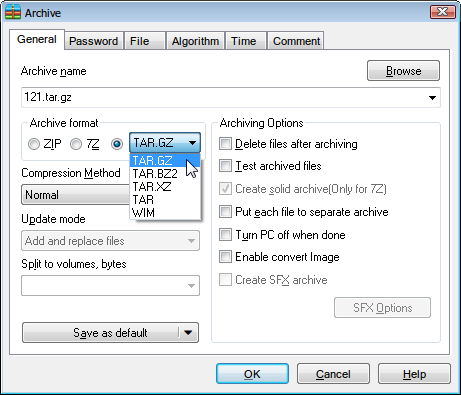

Все наверное знают архиватор WinRAR. Он очень удобный и красивый, но платный. Есть бесплатный 7-zip, которым я пользовался несколько лет. Есть ещё куча других платных и бесплатных архиваторов, но большинством из них неудобно пользоваться. 7-zip меня полностью устраивал, пока не попался мне замечательный китайский архиватор HaoZip.
Внешний вид и базовый функционал HaoZip слизан с WinRARа, а движок – 7-zip. То есть у китайцев получился некий гибрид 7-zip и WinRAR. В дистрибутив архиватора входит несколько интересных утилит: конвертер изображений, калькулятор MD5, массовая переименовывалка файлов, поиск с заменой в текстовых файлах, просмотр картинок, какой-то антивирусный сканер и виртуальный CD-ROM!
Очень понравилась всеядность HaoZip. Список поддерживаемых форматов огромен. Он может открывать как архивы файлы справки .chm, файлы установщика NSIS и все остальные форматы, поддерживаемые 7-zip.
Список форматов, открываемых HaoZip

Окно создания архива HaoZip
А это окно создания архива WinRAR. Найди отличия!
На мой взгляд это самый удобный на сегодня бесплатный архиватор. Степень сжатия 7z выше, чем у WinRAR. Уникальной является функция просмотра картинок прямо внутри архива без распаковки. Если вам нравятся интерфейс WinRAR бесплатность 7-zip, то HaoZip вам точно понравится.
На сайте разработчика находится только китайская версия и старая версия на английском. Поэтому пришлось искать неофициальную русскую сборку, которую вы можете скачать в конце этой страницы.
На момент последней правки этой статьи вышла версия 5.5.1, но там сильно переделали интерфейс, и кому-то возможно больше понравится классический вид 4.4.1.
Пользуйтесь:
Скачать HaoZip 4.4.1 Build 9596
Скачать HaoZip_v5.5.1.10498(x86-x64)
{kind=link}